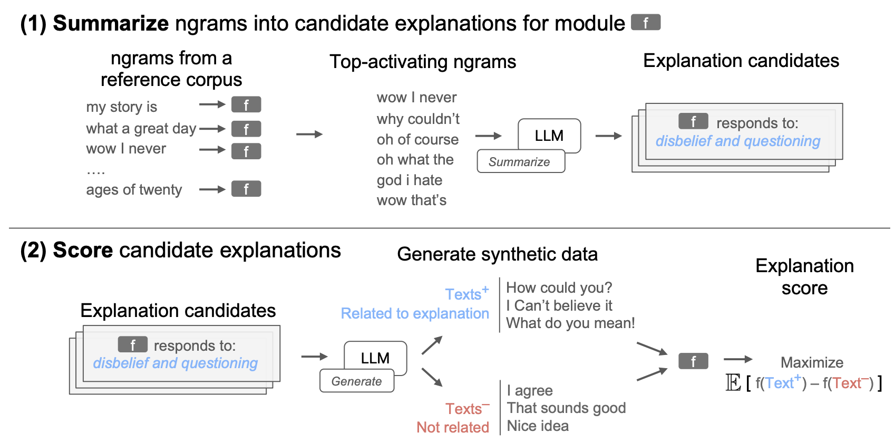
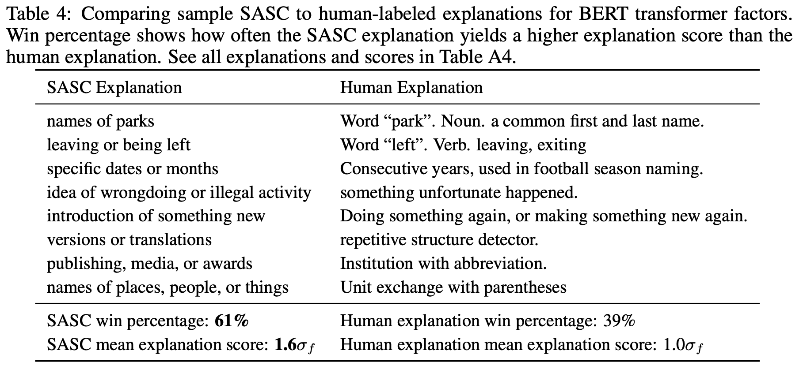
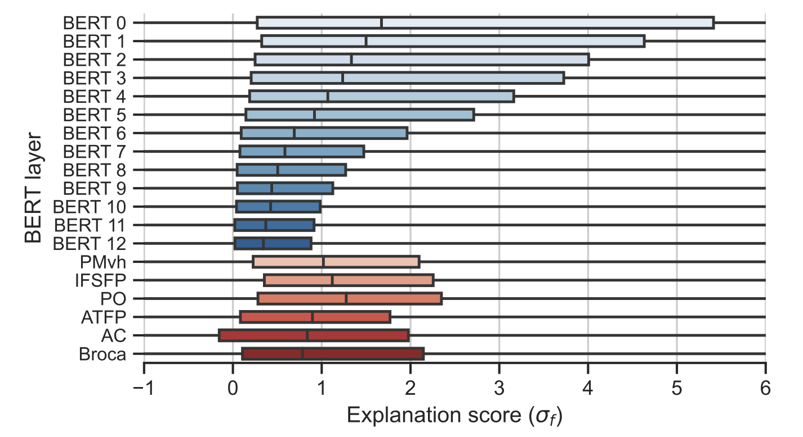

Automated Interpretability
December 3, 2024 • David Atkinson, Sheridan Feucht
Is it possible to automate the process of interpreting units in a neural network? Maybe, if we turn LLMs back on themselves. The papers for today's class focus on how we can use LLMs to explain the inputs/outputs of units within a network.MAIA: A Multimodal Automated Interpretability Agent
TODO (David)Language Models Can Explain Neurons in Language Models
TODO (David)Explaining Black Box Text Modules in Natural Language With Language Models
This paper provides another approach to describing the selectivity of units within language models—one that they also apply to fMRI data! The first authors of this paper are Chandan Singh, a senior researcher at Microsoft Research, and Aliyah R. Hsu, a fifth-year PhD student at UC Berkeley. It seems that this project was primarily completed at Microsoft Research, but they also collaborate with Alexander Huth, a professor of neuroscience at UT Austin, and his PhD student, Richard Antonello (who is now a postdoc at Columbia).
This paper introduces a method for analyzing text modules, which they define as any function that maps text to a continuous scalar value. This could be a neuron within an LLM or a voxel in an fMRI scan (when responding to language stimuli). To analyze these modules, they introduce a method called Summarize And SCore (SASC), which takes some text module f and generates a natural language description of the module, as well as a confidence score of how good the explanation is. SASC is a two-step process:
- Summarization. Based on a reference corpus, ngrams that activate f the most are sampled. A pre-trained "helper LLM" is then used to generate a summary of those ngrams, which acts as a description of what f responds to.
- Synthetic Scoring. To evaluate an explanation of f, the helper LLM is used to generate synthetic data conditioned on that explanation. Then, the mean difference between the text module evaluated on synthetic text \( f(Text^+)\) and the text module evaluated on unrelated synthetic text \( f(Text^-) \) is calculated. Their score is measured in units of standard deviations; for example, a SASC score of \( 1\sigma_f \) indicates that synthetic data based on that explanation increased activations of f by one standard deviation from the mean.
Their Figure 1 shows an example of this process for a module that responds to ngrams like "wow I never". As they mention, the efficacy of this method depends a lot on the length of ngrams fed through the model; however, longer ngrams require more computation time. Another thing to note is that in practice, they use a large generic corpus to calculate \( f(Text^-) \), instead of synthetically generating "neutral" text.
Synthetic Module Evaluation
First, the authors see how well SASC works when trying to recover descriptions of synthetic text modules. They use a dataset from Zhong et al. (2021) consisting of keyphrase descriptions of examples in a dataset (e.g. related to math, contains sarcasm), and then use a text embedding model to embed input examples and output the negative Euclidean distance between the input and the keyphrase description. This gives us text modules that we know the "ground truth" explanation for.
They find that SASC successfully identifies 88% of the ground-truth explanations. If the reference corpus is restricted, or if a lot of noise is added to f, SASC is still successful about 67% of the time. However, they do use examples from the Zhong et al. (2021) dataset as their reference corpus, which seems like it might inflate the efficacy of this method, even in the restricted setting.
BERT Evaluation
Instead of analyzing individual neurons in BERT, the authors analyze transformer factors from Yun et al. (2021). These are features found via sparse over-complete dictionary learning, in a paper that was a precursor to Anthropic's SAE investigations.  They find that, using their scoring method with GPT-3, SASC explanations score higher than human explanations. However, scores become worse in later layers.
To further evaluate these explanations, they fit a logistic regression to the factor coefficients to perform specific tasks like emotion classification, news topic classificiation, and movie review sentiment classification. When the top 25 regression coefficients are examined qualitatively, they find that e.g. the feature labeled "professional sports teams" contributes heavily to classification of news articles being sports-related.
fMRI Comparison
Here are two interesting highlights from their fMRI analysis (read the full paper for details). One is that explanation scores for fMRI voxels are much lower than they are for early layers in BERT (but similar to middle BERT layers).  The other thing is that if you fit a topic model to all of the explanations found by SASC, fMRI explanations have a much higher proportion of explanations related to the topic action, movement, relationships.... This is apparently consistent with prior findings showing that the largest axis of variation in fMRI voxels is between social and physical concepts.Code Resources
TODO